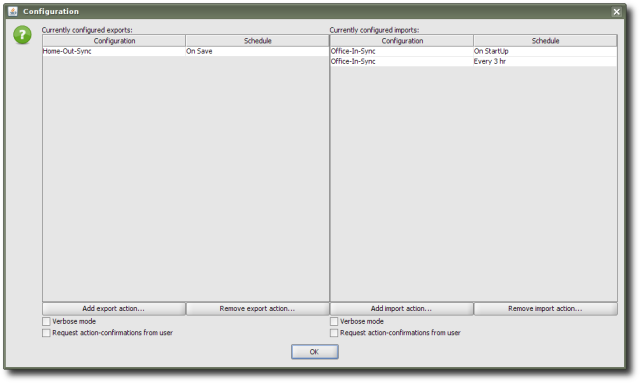

Synchronizer - tool for data synchronization between different Bias application workspaces at different PCs; is quite suitable in cases, when user prefers to work with local copies of application instead of carrying one copy on USB-Flash drive all the time; built-in scheduling system of automatic import/export is quite flexible and allows to perform both non-repeat operations binded to certain event (import on start, export on save and/or exit) and periodic operations (for example, data import every two hours and so on); it worth to mention that application core automatically optimizes requests to data import/export - if data haven't been changed till last transfer operation time, operation wouldn't be performed again (traffic and time economy); another important moment is that Bias provides an information about export time and user that performed it - thus, it's even possible to organize more or less agreed and transparent approach for cooperative work of several users of different Bias application copies, which are synchronized between each other; for the fairness, it should be noted, that there's a nuance that limits Bias usage for such a purposes only to relatively small working groups and non-complex schemes of cooperation: there's no protection from concurrent modifications of the same category/data-entry (meaning, Bias can be used for cooperative work only in some cases and where there's specified organization of such a process: for example, there won't be problems if each user edits only certain categories/data-entries, that another users only view or if shared items are edited by different users alternately).
Extension is provided by R. Kasianenko, an author of Bias application.
Preview:
